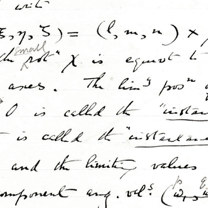
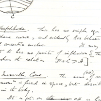
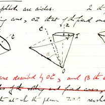

TEACHING EXPERIENCE

Previous teaching
Level I
-
•Scientific Computing, Adelaide, Semester 1, 1996 – 2001.
-
•Mathematics I – Calculus, Adelaide, Semester 1, 1996 – 1997, 2003, Semester 2, 2003.
-
•Mathematics I – Algebra, Adelaide, Semester 1, 1998 – 2001.
-
•Mathematics 1A, Macquarie, Semester 1, 2016, Semester 2, 2017
-
•Mathematics IM, Adelaide, Semester 2, 2004.
Level II
-
•Continuous Dynamical Systems, New South Wales, Semester 2, 1992 – 1994.
-
•Differential Equations and Fourier Series, Adelaide, Semester 1, 2003 – 2006.
-
•Dynamic Modelling, Adelaide, Semester 2, 1995 – 1997.
-
•Engineering Mathematics, New South Wales, Semesters 1 and 2, 1992 – 1995.
-
•Financial Computing, Adelaide, Semester 1, 1998 – 2001.
-
•Higher Vector Analysis, New South Wales, Semester 1, 1995.
Level III
-
•Hydrodynamics, Adelaide, Semester 2, 1999 – 2001.
-
•Fluid Mechanics, Adelaide, Semester 2, 2005.
-
•Mathematical Biology, Adelaide, Semester 2, 2003 – 2004.
-
•Waves, Adelaide, Semester 1, 2010 – 2011.
-
•Mathematical Modelling 3 - Partial Differential Equations, Auckland, Semester 1, 2013 - 2015
-
•Fundamentals of Continuum Mechanics - Fluid Mechanics Module, Auckland, Semester 1, 2013 - 2015
-
•Mathematical Modelling 3 - Differential Equations Module, Auckland, Semester 2, 2013 - 2015
-
•Waves, Macquarie, Semester 1, 2019
-
•Nonlinear Dynamics and Chaos, Macquarie, Semester 2, 2018
Level IV
-
•Advanced Fluid Dynamics, Adelaide, Semester 2, 1997.
-
•Dynamical Systems and Chaos, Adelaide, Semester 2, 1995 – 1996,1999.
-
•Hydrodynamic Stability, New South Wales, Semester 1, 1994.
-
•Modern Methods in Applied Mathematics, Adelaide, Semester 2, 2000 – 2001.
-
•Aerodynamics, Adelaide, Semester 2, 2008.
-
•Advanced Mathematical Methods, Adelaide, Semester 1, 2009.
-
•Advanced Continuum Mechanics 1 - Hydrodynamic Stability Module, Auckland, Semester 1, 2013
-
•Advanced Continuum Mechanics 2, Solitons and Fourier spectral methods, Auckland, Semester 2, 2013 - 2015
-
•Advanced Mathematical Methods, Macquarie, Semester 2, 2016
External Courses
-
•Advanced Mathematical Methods, The University of Adelaide, Semester 2, 2012.
-
•Fluid Mixing, Australian Mathematical Sciences Institute Summer School, January 2005.



Copyright 1995-2020 Jim Denier